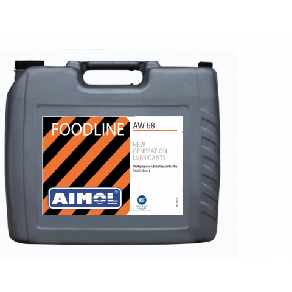
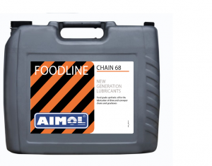

Науково-виробнича компанія AIMOL виробляє високоякісні мастильні матеріали для будь-якого промислового застосування, використання в автомобілях і для автоспорту. Використовуючи всі доступні технології, які ми значно удосконалили за останні 30 років, ми можемо гарантувати безтертяну роботу транспортного та промислового обладнання. AIMOL гарантує надійну високоякісну продукцію для всіх ваших машин і двигунів. AIMOL усвідомлює, що сучасний ринок потребує абсолютно нового підходу. Орієнтація на клієнта є ключовим фактором, але тим не менш ним часто нехтують. Хоча ви знайдете заяви про важливість прислухатися до вимог клієнтів у багатьох заявах про місію, цьому приділяється мало уваги. AIMOL визначив це як один із головних факторів успішного обслуговування ринку. Не лише прислухатися до запитів клієнта/ринку, а й швидко реагувати. Для цього ми добре розуміємо ринок та людей, які працюють на ньому. Для успішного підходу до ринку потрібний не тільки хороший продукт та відома торгова марка. AIMOL усвідомлює, що сучасний клієнт потребує – крім високоякісних найсучасніших продуктів за конкурентоспроможними цінами – активної підтримки, такої як особистий контакт, активна реклама, гарний розподіл, сучасна та різноманітна упаковка та гарний асортимент продукції. Потрійний електронний маркетинг Ми поєднуємо продукти відмінної якості з сучасними методами маркетингу разом із нашою маркетинговою стратегією Triple-E, що забезпечує нам унікальну позицію на ринку: ексклюзивність для наших партнерів - європейська найвища якість - залучення. Потрійна орієнтація на клієнта S. Наша орієнтація на клієнта завжди полягає у потрійному S: Сервіс - Швидкість - Серйозність (але завжди з посмішкою) Потрійна P-Співпраця Співпраця з нашими партнерами характеризується: пристрастю - силою - партнерством
Foodline-aw super mastilo Dali opis productu
 Foodline-chain dooje garne mastilo
Oil 3
Oil 4
Oil 5